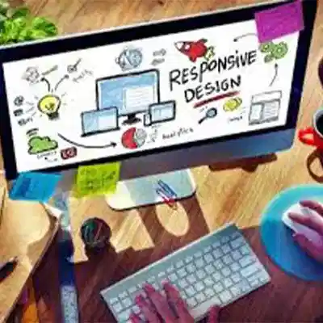

Projects
Cabling Closet

Many projects started by removing network cables, which were just added and cut and never removed. This led to being unable to track them, therefore, recabling was a must in most cases. Leaving a professional cabinet, with a proper cable management system in place.
Deploying Infrastructure
Deploying complete infrastructures from Firewall, Physical communication racks, cabling, switches, routers, servers, SAN, NAS, CCTV systems, cameras, motion sensors, Physical access controls, to the workstations/laptops.
Migrating Systems
Deployed Windows Server from 2000 to 2019, either for new builds or part of a Migration or upgrade; Performing these with the industry best practices in place, as for SQL databases, AD, DHCP, DNS, Exchange, FS, PS, etc.
Analyzing Threats
Performing deep analysis of a current infrastructure and advising where to increase the security, where is their most vulnerable data or system, and assisting in securing these elements. Auditing A/V, DLP, FW, Network Monitoring/Auditing tools.
Process & Procedures
Auditing new and old style companies and assisting in deploying processes and procedures for the Infrastructure in place, or create one to be implemented for the current business needs. Ensuring that there is a BCP, DR and an ITIL framework in place.
Fun Facts
I regularly indulge in video games and have a passion for drawing and painting miniatures, often creating intricate dioramas. Learning is a constant pursuit for me, and there's rarely a moment when I'm not exploring something new. I also have a fondness for reading traditional paper books.